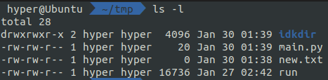

有時候我們想要執行或存取某個檔案，卻出現 Permission denied，就會直接
chmod +x [file]或chmod 777 [file]，於是，我們來談談檔案權限吧！
權限代號與檔案分類
輸入ls -l指令會發現前面有類似-rw-rw-r--由r w x組成的字串，其實這代表檔案的類型與權限。

第一個字元代表檔案的類型：
d代表目錄 (資料夾)-一般檔案，包含純文字、binary、datal連結檔 (link file)，類似 Windows 的捷徑b區塊設備檔 (儲存用設備，如硬碟)c字元設備檔 (序列埠周邊設備，如鍵盤、滑鼠)s資料接口檔p資料輸送檔
最常見的就是d跟-啦。
而接下來的字元以3個為一組，共三組，依次代表擁有者、擁有者的群組、其餘帳號的權限。
權限有分為三種：
r讀取 (目錄則是可以看到裡面檔案的權限)w寫入x執行 (目錄則是可以進入的權限)
舉個例子，-rw-r--r--代表是一般檔案，自己可讀寫，同群組跟其他人都只能讀。
講完了權限的分類，接下來來講如何更改權限。
chmod 更改存取權限
首先我們來看一個指令
chmod 765 [file]
中間的 765 是什麼意思呢，他分別對應了上面所講的，擁有者、擁有者的群組、其餘帳號的權限。
這就是設計者的巧思了，其中r,w,x分別是4,2,1，所以7 = 4+2+1就是可讀、可寫、可執行，以此類推，6 是可讀、可寫、不可執行，5 就是可讀、不可寫、可執行。
回到上面的例子，如果要把檔案權限改成-rw-r--r--那麼對應的指令就是
chmod 644 [file]
另外，chmod還有另一種用參數指定的寫法：
chmod [who] [+/-/=] [rwx]
[who]可以填入u(user 擁有者)、g(group 擁有者同群組)、o(others 其餘帳號)、a(all 所有帳號)+是增加權限；-是取消權限；=是直接設定
chmod ug-x [file]
就是取消擁有者及同群組帳號執行的權限
那如果要一次更動目錄及以下的所有檔案，只要加上-R(recursive) 就可以了
(通常是-r，但因為被用掉了所以變大寫)
chown 更改擁有者
用法是
chown [user] [file]
就會把 file 的擁有者改成 user 了
要注意的是這同時會改變到權限。